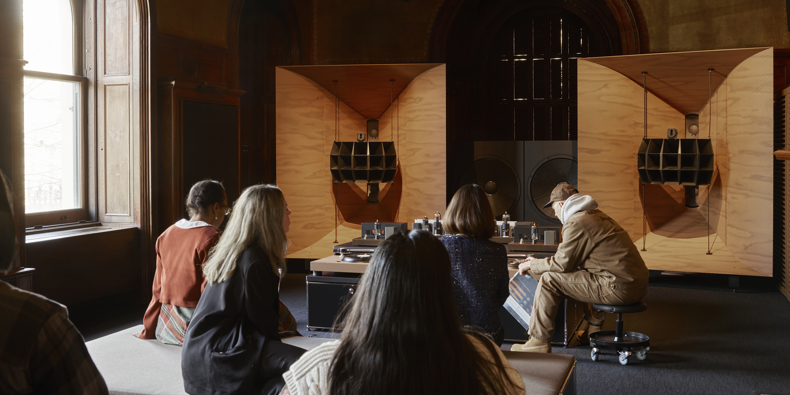
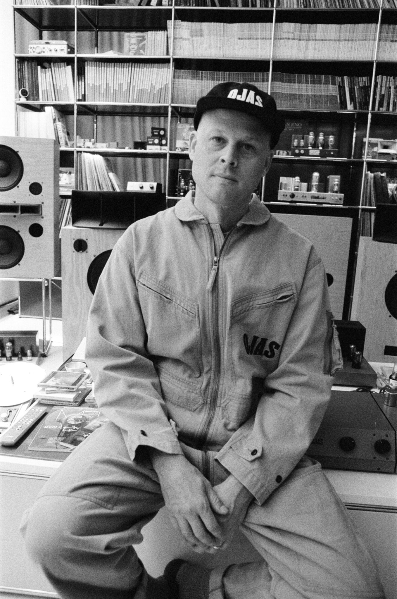
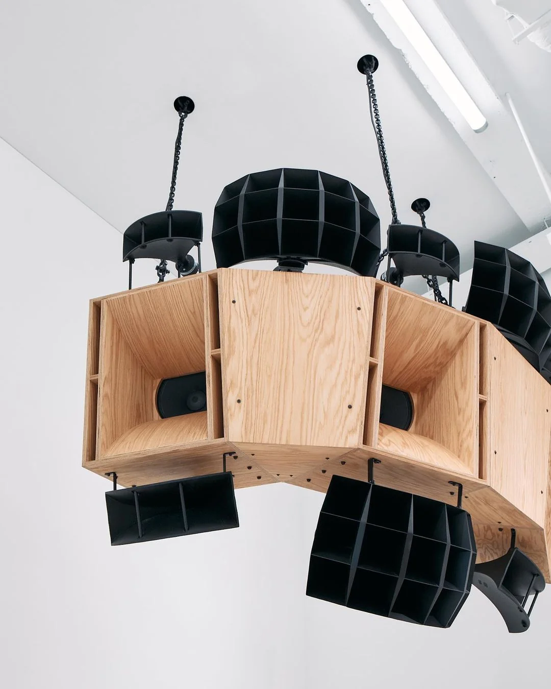
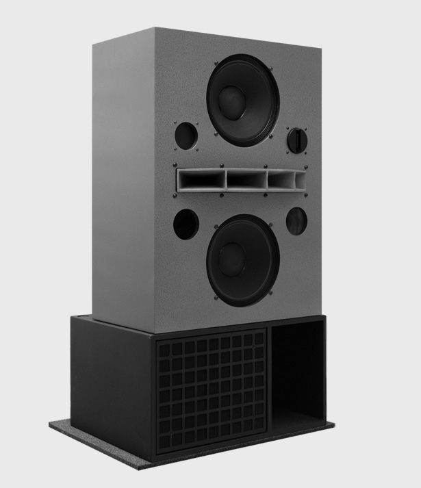

2023
FACT MAGAZINE
As Hi-Fi Listening Room Dream No. 1, a meditative listening
room created and programmed by New York artist Devon Turnbull,
enthrals visitors at
180 Studios The Vinyl Factory: Reverb,
we look back on Turnbull's interview with Benji B about the
installation, originally published in Fact's F/W 2023 issue.
Walking into Devon Turnbull’s HiFi Listening Room Dream No. 1
(2022), you might find yourself transported to a smoky jazz
bar in 1962, a gong bath in India, a classical Spanish guitar
recital, a twenty-minute experimental drone set in east London,
or an improvised mosh pit of musicians sounding like outer space.
It is at once energising, relaxing, blissful, intense–all things
that music can make you feel, only more.
Listening Room’s softly carpeted seating platform opposite
the serene wall of sound completes its symphony of grey tones,
the speakers shimmering at head height in an off-blue and silver
hammered paint creating an imposing, austere sculptural presence.
The record player, amps, and associated modules are all handmade
and industrial in appearance, each component integral to the
musical output.
Devon Turnbull has been making hi-fidelity components, club
systems, and domestic-scaled speakers under the guise of Ojas
for twenty years. His inherently generous listening practice
and participatory philosophy all stem from the much earlier
influences of transcendental meditation and his parents’
appreciation of music and ritual. A young Turnbull was steeped
in these teachings but abandoned them for a different kind
of transportive experience through music, design, and art.
For this interview, DJ and long-time Turnbull supporter Benji B
stopped by during the second installation of the Listening Room
at Lisson Gallery in London in 2023 after its New York gallery
hosted the launch of the system in 2022. Their discussion ranged
far and wide, but this excerpt gives an insight into the thought
and detail behind Turnbull’s methods and messages.

Benji B: HiFi Listening Room Dream No. 1 is the culmination of a lifetime of passion and experience. It’s an experience to be celebrated and be absorbed within.
Devon Turnbull: The best way for this piece to live and work is that it be completely democratic and available to everyone for free. That’s part of the beauty of it, too. You’re sharing something which is usually very much gated, but you’re doing it in a way that’s like, “Hey, if you’re at all interested in this, if you’re curious about it, just stop in and spend time.” The best is when there’s ten people or less there and people just wind up lying down flat and taking a nap. I’m 100 per cent cool with that. When people don’t feel any pressure, they end up having the deepest kind of emotional experience.
BB: Absolutely. I think that’s a really good place to jump off in our chat. You’ve already maybe arrived at the most important part. It’s not the technical detail, it’s not even what record you’re playing. It’s the fact that you have dismantled the snobbery around something which was previously inaccessible. You are simultaneously part of a ‘secret society’ of audiophile experts and yet you have made products that are accessible to the rest of the world. It’s a universal truth that nearly everyone appreciates music, so in a way, we have a lot to thank you for by opening a door for people to experience quality, for people to experience a meditative element to music that I think subconsciously they know is there, but haven’t necessarily had the right environment.

DT: Absolutely. There’s a lot to unpack there.
When it comes to listening to music, the set and setting
are so important. That’s kind of what led me down the
path of building my own hi-fi gear, of wanting to have
as deep as possible an understanding of the whole signal
chain in order to have a closer relationship with music,
and also creating sort of a shrine for music in my home
so that I give myself that space to listen to music.
This is a journey that I’ve been on for about twenty
years. I feel like I can’t remember a time when I didn’t
care about having an audio system that I wanted to sit
and listen to. Even when I was a DJ, when I was playing
hip-hop and electronic music, it was the primary way
I was collecting records. I think we have collectively
fallen into that thing of, “Oh, I can listen to all the
music in the world,” and then it just becomes background
music; but there’s not enough attention to the actual
process of listening to music. I started discovering
this whole culture of people that listen to music as
their primary drive, and I really identified with that.
It can become a pretty reclusive hobby, but I established
some friends who were also interested in it and I
eventually shared it with some people who thought that
it was special enough to deserve a larger platform,
which is what we’re doing here.
BB: We could say that right now we’re at the most optimal, desirable, dream-utopia level of the scalable principle which is inside Lisson Gallery, a perfect space to listen to your perfect sound system. But for those people that might not be able to make it to London, I know that within you, you know that the guiding principles are scalable, and that the foundations of a good sound system to appreciate music are applicable on a humble scale all the way through to the one at Lisson. So, what would you say those principles are and what are the foundations of setting up a sound system no matter what your means?
DT: I try not to get too dogmatic about philosophical viewpoints on what makes a good sound system or what makes good music.
BB: Maybe the intention, then.
DT: Yeah, the intention is the important part.
I like very efficient speakers. I like minimalist,
low-power amplifiers. I like that kind of formula
for having a very emotional, visceral, textural kind
of sound. Audio engineering as a whole is a vast
area of academia, essentially. There are many ways
to go about designing a speaker or a sound system.
So what I tell people when they ask me, “How can I
learn how to do what you do?” is that you should
just listen to as much stuff as you can, as many
opportunities as you can to hear as many different
sound systems as possible. Don’t be intimidated.
You can have an emotional connection with so many
different types of sound systems. Find the one that
really speaks to you, and then just study it.
There is a low cost of entry for any one philosophy,
whether it’s high efficiency, whether it’s an
open-baffle full-range kind of thing, or just a
fairly conventional three-way tower speaker.
Find something that you identify with, study it.
And then find ways of building your own creation,
inspired by the thing that you know you like.
BB: That’s a beautiful answer. And in a way today has been, in my personal life, the perfect manifestation of that attitude. This morning I woke up listening to your bookshelf speakers with a streaming device. Then I move to my studio, where I’m listening to quite tough traditional studio monitors, and then onto something using an EMT turntable and a much more hi-fi setup. And now I’m in the holy grail at your sound system at Lisson. And in a sense, those four experiences of my day were relevant and totally right for each particular moment. And maybe in a way, that leads us back to one of the original things that you alluded to which is context, because so much of your work is about context. You have a shrine in your house for music. Downstairs certainly feels like a shrine to music. Talk to me about music in its environment and how that’s a big part of your vision.

DT: I think that light and air are important
aspects of enjoying listening to music. I make
smells for listening to music too. People just walk
in and they whisper before they even walk into the
room. They sit down, they often close their eyes.
It’s not uncommon for someone to start crying in
that environment. People have told me that they’ve
had the realisation that they’ve kind of lost touch
with this emotional context for listening to music.
I think part of that is not having an invisible music
listening system. There’s an aspect of that that’s
psychosomatic. But if you are playing a file from the
internet and there’s no anchor for your music listening,
of course it’s going to be background music. That’s
all it really can be.
So that was when I came up with this idea of the music
shrine. I felt that the more my hand went into crafting
the sound of the system and the device, the more I had
a direct relationship with the performance and with
the artists who made that performance. And in a sense,
I start to feel like I’m part of the music and the
circle that happens with musicians creating sonic
vibrations. We have a microphone or some kind of pickup
that’s turning vibrations into electronic pulses,
we can store them, and then send those pulses to
another diaphragm that puts the vibrations back into
the air. But there’s Neil Young’s fingers playing the
guitar. And then there’s the sound of his guitar,
there’s the sound of his amp, there’s the mic that
picked up the sound. And then there’s the tape machine
that recorded the sound. And then that thing bounces
right back into a playback system. And you start to
vibrate the tone of a speaker and it turns back into
acoustic vibrations. It’s this beautiful closed-loop
system, that, inevitably, the artist and the recording
engineer only control half of, so you are directly
engaged in the music you’re listening to, whether you
want to be or not. I just feel like bringing intention
to that process is a very important part of feeling
connected to it.
BB: I heard that 180 Studios has bought this work, which we’d all love to be able to buy. And so hopefully, we’ll have a space for listening at 180?
DT: I hope so, it’s a totally mind-blowing place. The intention is to make something that’s quite easy to access so that people can walk in off the street and experience the work. Hopefully, it continues to be as accessible as it is here. I mean, here, there is zero gatekeeping. Anyone can walk in off the street, whether you’re the most famous musician or just a tourist who’s read there’s something interesting in here. Everyone’s equally welcome to sit and experience it.
BB: Yeah, absolutely. It was about ten or twelve years ago that the listening bars of Tokyo started to become, “Oh, you should go to Marfa, you should go to JBS,” and different places that I’m sure you know very well. And in a way, the importing of that culture to the US and the UK, which are the only two markets that I can speak on, didn’t really translate because it missed the intention, and it missed that kind of a certain thing that goes with it. But I guess the desire was there.
DT: And that’s a good thing, right? The fact that people want to create these spaces for appreciating music. In a more considerate way, I think that’s a very good thing. You have Brilliant Corners, In Sheep’s Clothing, Public Records—but there are only a handful of places that have tried in a really pure way to accomplish this. But we’ve all hit the same kind of hurdles and how to try to find out how to overcome them. Culturally thus far, it’s a stretch to imagine people in the West going to a bar and not socialising. At many of these places in Japan, if you talk, they will kick you out immediately.
